02
GセイバーHIDDEN BLADE
Gケインの中に収められた仕込み刀。Gプラズマを凝縮させた光剣で、 メインジェネレーターの出力をそのまま注ぎ込んでいる。 触れたものすべてを焼き切る、最強の剣。
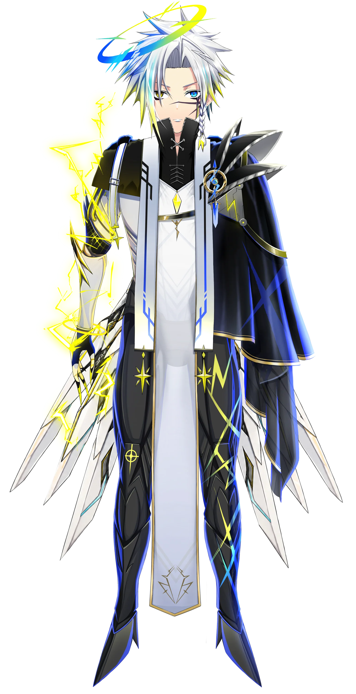
天候を操る、
天上人。
VER 5.0 — ASCENDANT
NEW SUIT / 2026
全武装統合制圧型
敵勢力の大量襲撃に対応するべく進化した型。 Ver2.0の隠密性、Ver3.0の近距離特化、Ver4.0の遠距離特化── それぞれの最大値ではなく最大平均値をとって統合した。
完全無欠のハイエンドスペックではない。継戦能力を重視した、 整備性と拡張性のためのオーソドックス。長く立ち続けるための設計である。
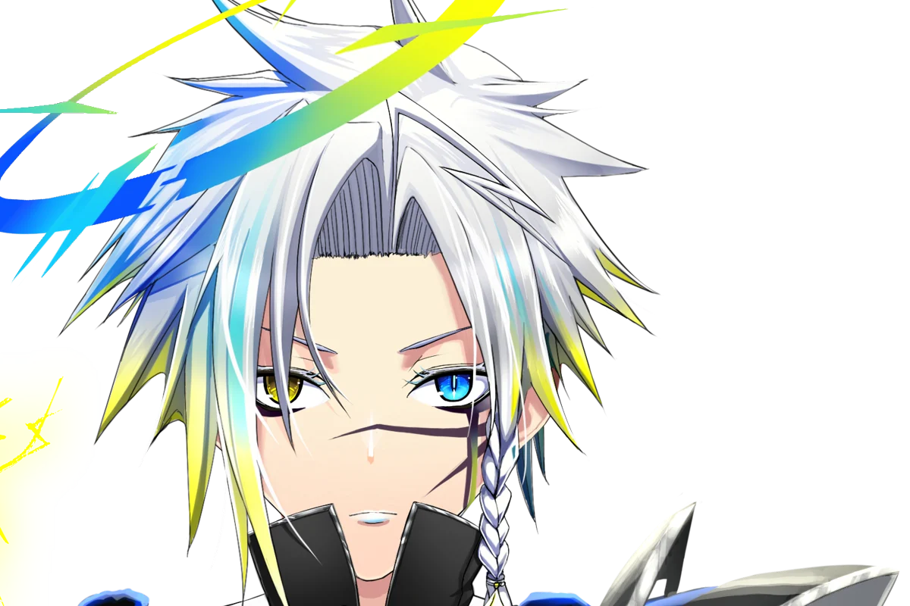
DETAIL 01 — HALO & EYES
頭上に浮かぶのはヘイロー——天使の輪。青からシアン、そして黄へ遷移するグラデーションが、 10秒かけて一周し、3秒に一度だけ静かに発光する。
左目の蒼は定期的に光を灯す。神秘性を優先して、瞳のハイライトは意図的に少なく抑えた。
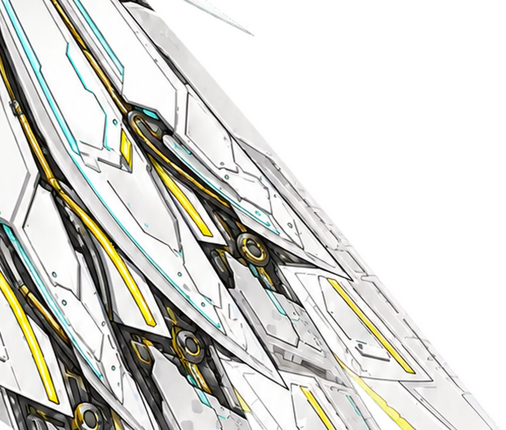
DETAIL 02 — FEATHER SHIELD GUN BARREL
左半身を覆うのは、防護シールド兼マルチレーザーガン。 敵からの攻撃を遮断する盾となり、シールド用AIが判断して自動で身体を守る。
下部の大型6枚は分離可能。射出後に砲身が展開し、自由な角度からGレーザーを放つ── オールレンジ攻撃へ移行する。
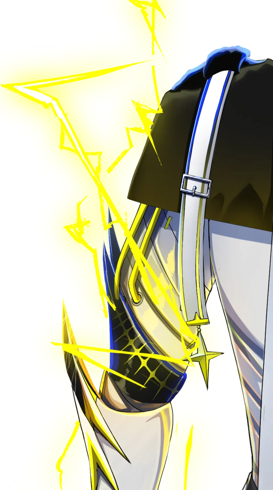
DETAIL 03 — GOD HAND
Gプラズマを帯電させ、掌から一気に放つ。放電距離を操作すれば射程は10〜30mまで伸びる。 ただし遠いほど威力は落ち、散弾のように散る。
起動すればバチバチと腕が電気を纏い、胸の雷マークも連動して明滅する。
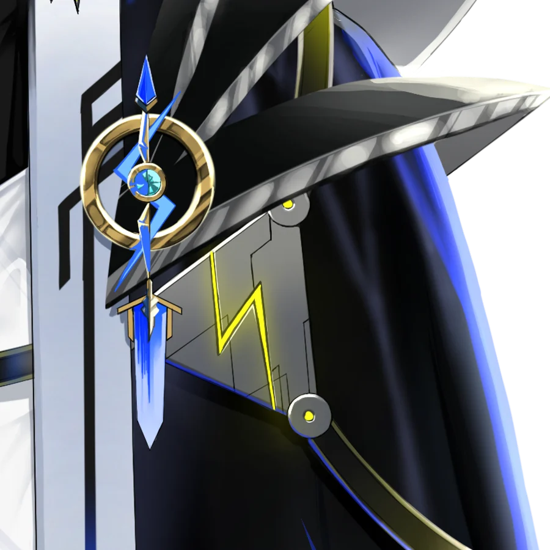
DETAIL 04 — EMBLEM
金の環を貫く蒼い刃。中心に嵌まる石。その下に走る雷のマーク。 身体が動けば、ベルトも青い装飾も、わずかに遅れて揺れる。
中央から垂れる3本の白帯、先端の金装飾、左半身の黒布── 配信画面に最も映る場所だから、ここの揺れがいちばん綺麗であってほしい。
ARMAMENT
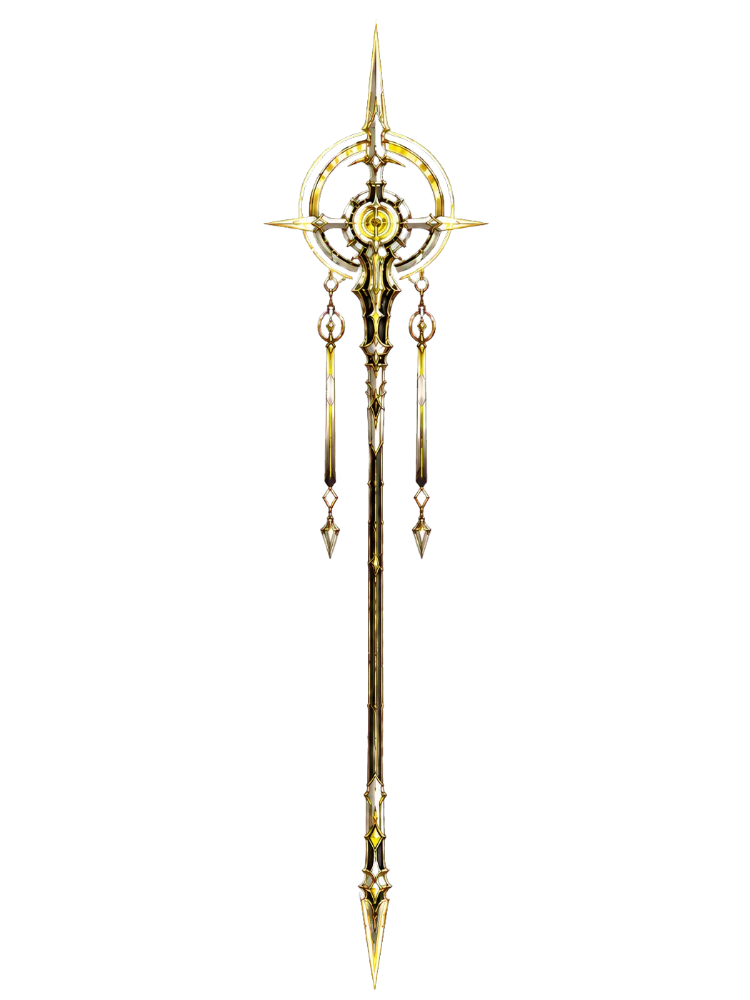
MAIN — G-CANE
ACONITE WOLFSBANE / 錫槍杖
トリカブトが由来の、天候と大気を操作する戦闘杖。 空間内の水分と電子にGエネルギーで干渉し、落雷・激雨・乾燥・突風・竜巻・吹雪・雹—— あらゆる気象現象を発生させる。
雷氷によって、電気と氷の質量をともなう広範囲攻撃が可能になった。 大量に迫りくる敵の侵攻に、これで応える。
そして先端が変形すれば、大型の筆になる。G塗料を含ませ、夜の街に絵を描くために。
02
Gケインの中に収められた仕込み刀。Gプラズマを凝縮させた光剣で、 メインジェネレーターの出力をそのまま注ぎ込んでいる。 触れたものすべてを焼き切る、最強の剣。
03
飛行を可能にする背部のスカート型ユニット。内側にはGエッジドローンが36片仕込まれており、 射出して敵にぶつけ、斬る。遠距離の敵にも確実に届く飛翔武器。
04
翼の内側に格納された改良型スプレーガン。小型のダガーとしても使える。 Ver2.0から続くホルニッセの系譜、その第5世代。
05
布の下に隠れている左腕。隠し能力があるらしい。
LINEAGE
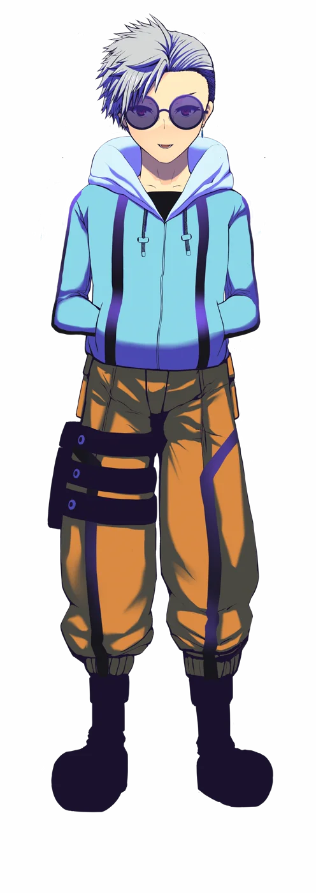
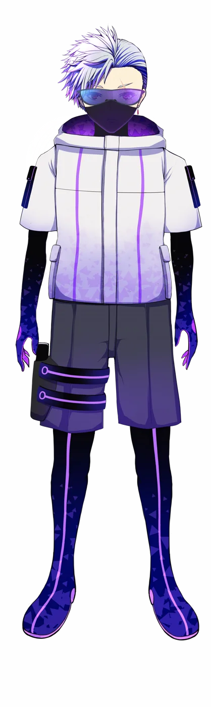
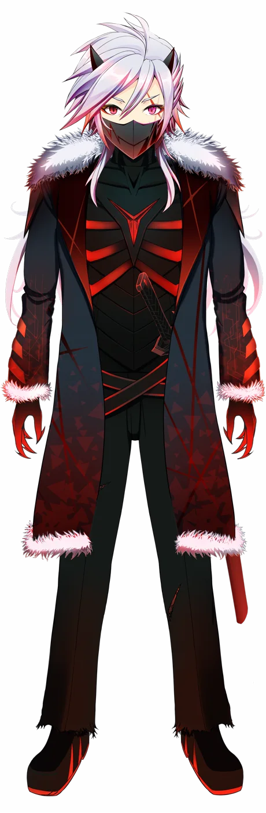
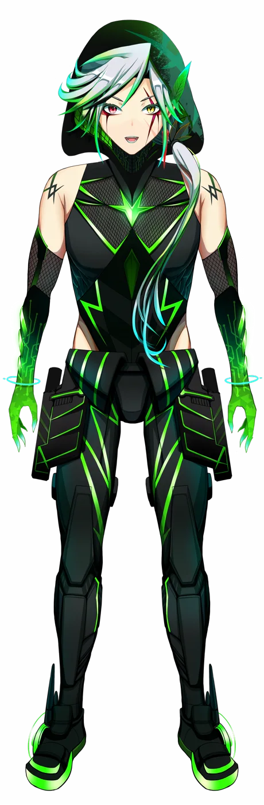
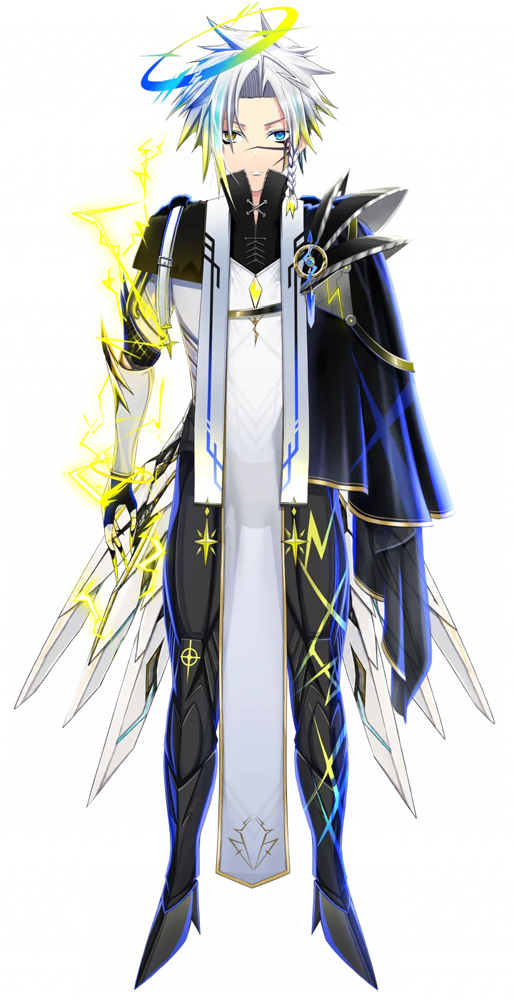
LIVE2D

BLUEPRINT

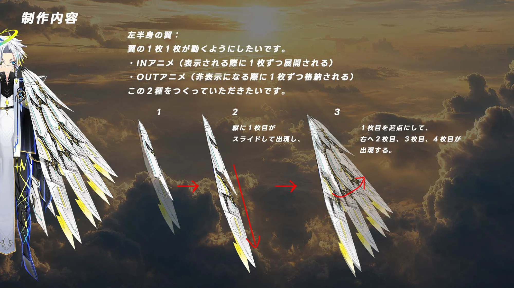